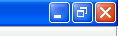

Exiting Tetrad |
There are two ways to exit the program. One is to choose "Exit" from the File menu. (See Tetrad Menubar.) The other is to click the red "X" in the top title bar for the application. This looks differently depending on what operating system you're in. In Windows XP, it looks like this:

When you exit the program, Tetrad ask you, for each session you have open, whether you'd like to save that session and, if so, where you would like to save it. Saved sessions are given the ".tet" suffix and are loadable in later versions of Tetrad.